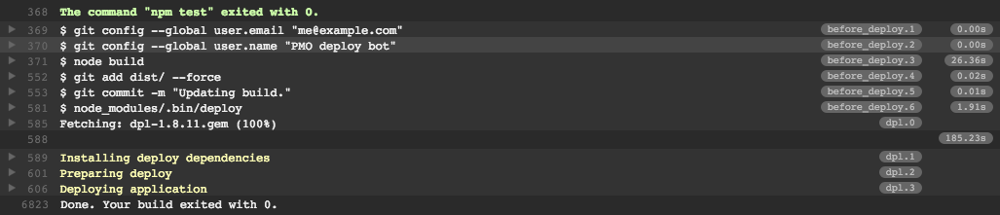

In-depth guide
In this guide you will learn about all of DoneJS' features by creating, testing, documenting, building and deploying place-my-order.com, a restaurant menu and ordering application. The final result will look like this:

After the initial application setup, which includes a server that hosts and pre-renders the application, we will create several custom elements and bring them together using the application state and routes. Then we will learn how to retrieve data from the server using a RESTful API.
After that we will talk about what a view model is and how to identify, implement and test its functionality. Once we have unit tests running in the browser, we will automate running them locally from the command line and also on a continuous integration server. In the subsequent chapters, we will show how to easily import other modules into our application and how to set up a real-time connection.
Finally, we will describe how to build and deploy our application to the web, as a desktop application with Electron, and as a mobile app with Cordova.
Set up the project
In this section we will create our DoneJS project and set up a RESTful API for the application to use. You will need NodeJS installed and your code editor of choice.
Create the project
To get started, let's install the DoneJS command line utility globally:
Then we can create a new DoneJS application:
The initialization process will ask you questions like the name of your application (set to
place-my-order) and the source folder (set tosrc). The other questions can be skipped by hitting enter. This will install all of DoneJS' dependencies. The main project dependencies include:If we now go into the
place-my-orderfolder withWe can see the following files:
Let's have a quick look at the purpose of each:
development.html,production.htmlthose pages can run the DoneJS application in development or production mode without a server.package.jsonis the main configuration file that defines all our application dependencies and other settings.test.htmlis used to run all our tests.README.mdis the readme file for your repository.srcis the folder where all our development assets live in their own modlets (more about that later).src/app.jsis the main application file, which exports the main application state.src/index.stacheis the main client template that includes server-side rendering.src/index.mdis the main documentation file for our application.src/models/is the folder where models for the API connection will be put. It currently containsfixtures/fixtures.jswhich will reference all the specific models fixtures files (so that we can run model tests without the need for a running API server) andtest.jswhich will later gather all the individual model test files.src/styles.lessis the main application styles.src/test.jscollects all individual component and model tests we will create throughout this guide as well as the functional smoke test for our application and is loaded bytest.html.Development mode
DoneJS comes with its own server, which hosts your development files and takes care of server-side rendering. DoneJS' development mode will also enable hot module swapping which automatically reloads files in the browser as they change. You can start it by running:
The default port is 8080, so if we now go to http://localhost:8080/ we can see our application with a default homepage. If we change
src/index.stacheorsrc/app.jsall changes will show up right away in the browser. Try it by changing themessageproperty insrc/app.js.Setup a service API
Single page applications usually communicate with a RESTful API and a websocket connection for real-time updates. This guide will not cover how to create a REST API. Instead, we'll just install and start an existing service API created specifically for use with this tutorial:
Note: Kill the server for now while we install a few dependencies (ctrl+c on Windows and Mac).
Now we can add an API server start script into the
scriptssection of ourpackage.jsonlike this:Which allows us to start the server like:
The first time it starts, the server will initialize some default data (restaurants and orders). Once started, you can verify that the data has been created and the service is running by going to http://localhost:7070/restaurants, where we can see a JSON list of restaurant data.
Starting the application
Now our application is good to go and we can start the server. We need to proxy the
place-my-order-apiserver to/apion our server in order to avoid violating the same origin policy. This means that we need to modify thestartanddevelopscript in ourpackage.jsonto:Now we can start the application with:
Go to http://localhost:8080 to see the "hello world" message again.
Loading assets
Before we get to the code, we also need to install the
place-my-order-assetspackage which contains the images and styles specifically for this tutorial's application:Every DoneJS application consists of at least two files:
src/index.stache) which contains the main template and links to the development or production assets.src/app.js) that initializes the application state and routes.src/index.stachewas already created for us when we randonejs add app, so update it to load the static assets and set a<meta>tag to support a responsive design:This is an HTML5 template that uses can-stache - a Handlebars syntax-compatible view engine. It renders a
messageproperty from the application state.can-importloads the template's dependencies:place-my-order-assetspackage, which loads the LESS styles for the applicationplace-my-order/app, which is the main application fileThe main application file at
src/app.jslooks like this:This initializes a DefineMap: a special object that acts as the application global state (with a default
messageproperty) and also plays a key role in enabling server side rendering.Creating custom elements
One of the most important concepts in DoneJS is splitting up your application functionality into individual, self-contained modules. In the following section we will create separate components for the homepage, the restaurant list, and the order history page. After that, we will glue them all together using routes and the global application state.
There are two ways of creating components. For smaller components we can define all templates, styles and functionality in a single
.componentfile (to learn more see done-component). Larger components can be split up into several separate files.Creating a homepage element
To generate a new component run:
This will create a file at
src/home.componentcontaining the basic ingredients of a component. We will update it to reflect the below content:Here we created a can-component named
pmo-home. This particular component is just a basic template, it does not have much in the way of styles or functionality.Create the order history element
We'll create an initial version of order history that is very similar.
And update
src/order/history.component:Creating a restaurant list element
The restaurant list will contain more functionality, which is why we will split its template and component logic into separate files.
We can create a basic component like that by running:
The component's files are collected in a single folder so that components can be easily tested, moved, and re-used. The folder structure looks like this:
We will learn more about those files and add more functionality to this element later, but it already contains a fully functional component with a demo page (see localhost:8080/src/restaurant/list/list.html), a basic test (at localhost:8080/src/restaurant/list/test.html) and documentation placeholders.
Setting up routing
In this part, we will create routes - URL patterns that load specific parts of our single page app. We'll also dynamically load the custom elements we created and integrate them in the application's main page.
Create Routes
Routing works a bit differently than other libraries. In other libraries, you might declare routes and map those to controller-like actions.
DoneJS application routes map URL strings (like /user/1) to properties in our application state. In other words, our routes will just be a representation of the application state.
To learn more about routing visit the CanJS guide on Application State and Routing.
To add our routes, change
src/app.jsto:Now we have three routes available:
{page}captures urls like http://localhost:8080/home and sets thepageproperty onAppViewModeltohome(which is also the default when visiting http://localhost:8080/){page}/{slug}matches restaurant links like http://localhost:8080/restaurants/spago and setspageandslug(a URL friendly restaurant short name){page}/{slug}/{action}will be used to show the order page for a specific restaurant e.g. http://localhost:8080/restaurants/spago/orderAdding a header element
Now is also a good time to add a header element that links to the different routes we just defined. We can run
and update
src/header.componentto:Here we use routeUrl to create links that will set values in the application state. For example, the first usage of routeUrl above will create a link based on the current routing rules (http://localhost:8080/home in this case) that sets the
pageproperty tohomewhen clicked.We also use the Stache
eqhelper to make the appropriate link active.Create a loading indicator
To show that something is currently loading, let's create a
pmo-loadingcomponent:Change
src/loading.componentto:Switch between components
Now we can glue all those individual components together in
src/index.stache. What we want to do is - based on the current page (home,restaurantsororder-history) - load the correct component and then initialize it.Update
src/index.stacheto:Here we make a
switchstatement that checks for the currentpageproperty (part of the AppViewModel that makes up the scope object of this template) then progressively loads the component with can-import and initializes it.Setting
can-tag="pmo-loading"inserts a<pmo-loading>loading indicator while the import is in progress. A can-import's view model is a promise object, so once it is done loading, it sets itsstateproperty toresolved.Now we can see the header and the home component and be able to navigate to the different pages through the header.
Getting Data from the Server
In this next part, we'll connect to the RESTful API that we set up with
place-my-order-api, using the powerful data layer provided by can-connect.Creating a restaurants connection
At the beginning of this guide we set up a REST API at http://localhost:7070 and told
done-serveto proxy it to http://localhost:8080/api.To manage the restaurant data located at http://localhost:8080/api/restaurants, we'll create a restaurant supermodel:
Answer the question about the URL endpoint with
/api/restaurantsand the name of the id property with_id.We have now created a model and fixtures (for testing without an API) with a folder structure like this:
We also need to specify that the restaurant list can be filtered to restaurants in a queried city and state by updating
src/models/restaurant.js:Above we use
set.props.dotNotationsince our queries for these nested properties will be in the MongoDB-style 'dot notation' format required by the backend.For example, MongoDB expects a query parameter for restaurants in a specific state to look like
{'address.state':'IL'}and can-connect expects it to look like{address:{state: 'IL'}}.set.props.dotNotationallows can-connect to make comparisons between these two formats.Test the connection
To test the connection you can run the following in the browser console. You can access the browser console by right clicking in the browser and selecting Inspect. Then switch to the Console tab if not already there. Test the connection with:
This programmatically imports the
Restaurantmodel and uses it to get a list of all restaurants on the server and log them to the console.Add data to the page
Now, update the
ViewModelinsrc/restaurant/list/list.jsto use can-define to load all restaurants from the restaurant connection:And update the template at
src/restaurant/list/list.stacheto use the Promise returned for therestaurantsproperty to render the template:By checking for
restaurants.isPendingandrestaurants.isResolvedwe are able to show a loading indicator while the data are being retrieved. Once resolved, the actual restaurant list is available atrestaurants.value. When navigating to the restaurants page now we can see a list of all restaurants.Note the usage of
routeUrlto set up a link that points to each restaurant.slug=slugis not wrapped in quotes because the helper will populate each restaurant's individualslugproperty in the URL created.Creating a unit-tested view model
In this section we will create a view model for the restaurant list functionality.
We'll show a dropdown of all available US states. When the user selects a state, we'll show a list of cities. Once a city is selected, we'll load a list of all restaurants for that city. The end result will look like this:
Identify view model state
First we need to identify the properties that our view model needs to provide. We want to load a list of states from the server and let the user select a single state. Then we do the same for cities and finally load the restaurant list for that selection.
All asynchronous requests return a Promise, so the data structure will look like this:
Create dependent models
The API already provides a list of available states and cities. To load them we can create the corresponding models like we already did for Restaurants.
Run:
When prompted, set the URL to
/api/statesand the id property toshort.Run:
When prompted, set the URL to
/api/citiesand the id property toname.Now we can load a list of states and cities.
Implement view model behavior
Now that we have identified the view model properties needed and have created the models necessary to load them, we can define the
states,state,citiesandcityproperties in the view model atsrc/restaurant/list/list.js:Let's take a closer look at those properties:
stateswill return a list of all available states by callingState.getList({})stateis a string property set tonullby default (no selection). Additionally, whenstateis changed we will remove the dependentcityselection.citieswill returnnullif no state has been selected. Otherwise, it will load all the cities for a given state by sendingstateas a query paramater (which will make a request like http://localhost:8080/api/cities?state=IL)cityis a simple string, set tonullby defaultrestaurantswill always benullunless both acityand astateare selected. If both are selected, it will set theaddress.stateandaddress.cityquery parameters which will return a list of all restaurants whose address matches those parameters.Create a test
View models that are decoupled from the presentation layer are easy to test. We will use QUnit as the testing framework by loading a StealJS-friendly wrapper (
steal-qunit). The component generator created a fully working test page for the component, which can be opened at http://localhost:8080/pmo/restaurant/list/test.html. Currently, the tests will fail because we changed the view model, but in this section we will create some unit tests for the new functionality.Fixtures: Create fake data
Unit tests should be able to run by themselves without the need for an API server. This is where fixtures come in. Fixtures allow us to mock requests to the REST API with data that we can use for tests or demo pages. Default fixtures will be provided for every generated model. Now we'll add more realistic fake data by updating
src/models/fixtures/states.jsto:Update
src/models/fixtures/cities.jsto look like:Update
src/models/fixtures/restaurants.jsto look like:Test the view model
With fake data in place, we can test our view model by changing
src/restaurant/list/list-test.jsto:These unit tests are comparing expected data (what we we defined in the fixtures) with actual data (how the view model methods are behaving). Visit http://localhost:8080/src/restaurant/list/test.html to see all tests passing.
Write the template
Now that our view model is implemented and tested, we'll update the restaurant list template to support the city/state selection functionality.
Update
src/restaurant/list/list.stacheto:Some things worth pointing out:
statesandcitiesreturn a promise, we can check the promise's status viaisResolvedandisPendingand once resolved get the actual value withstates.valueandcities.value. This also allows us to easily show loading indicators and disable the select fields while loading data.stateandcityproperties are two-way bound to their select fields via value:bindNow we have a component that lets us select state and city and displays the appropriate restaurant list.
Update the demo page
We already have an existing demo page at src/restaurant/list/list.html. We'll update it to load fixtures so it can demonstrate the use of the pmo-restaurnt-list component:
View the demo page at http://localhost:8080/src/restaurant/list/list.html .
Automated tests
In this chapter we will automate running the tests so that they can be run from from the command line.
Using the global test page
We already worked with an individual component test page in src/restaurant/list/test.html but we also have a global test page available at test.html. All tests are being loaded in
src/test.js. Since we don't have tests for our models at the moment, let's remove theimport 'place-my-order/models/test';part so thatsrc/test.jslooks like this:If you now go to http://localhost:8080/test.html we still see all restaurant list tests passing but we will add more here later on.
Using a test runner
Note: If you are using Firefox for development, close the browser temporarily so that we can run our tests.
The tests can be automated with any test runner that supports running QUnit tests. We will use Testee which makes it easy to run those tests in any browser from the command line without much configuration. In fact, everything needed to automatically run the
test.htmlpage in Firefox is already set up and we can launch the tests by running:To see the tests passing on the command line.
Continuous integration
Now that the tests can be run from the command line we can automate it in a continuous integration (CI) environment to run all tests whenever a code change is made. We will use GitHub to host our code and TravisCI as the CI server.
Creating a GitHub account and repository
If you don't have an account yet, go to GitHub to sign up and follow the help on how to set it up for use with the command-line
git. Once completed, you can create a new repository from your dashboard. Calling the repositoryplace-my-orderand initializing it empty (without any of the default files) looks like this:Now we have to initialize Git in our project folder and add the GitHub repository we created as the origin remote (replace
<your-username>with your GitHub username):Then we can add all files and push to origin like this:
If you now go to github.com/<your-username>/place-my-order you will see the project files in the repository.
Setting up Travis CI
The way our application is set up, now all a continuous integration server has to do is clone the application repository, run
npm install, and then runnpm test. There are many open source CI servers, the most popular one probably Jenkins, and many hosted solutions like Travis CI.We will use Travis as our hosted solution because it is free for open source projects. It works with your GitHub account which it will use to sign up. First, sign up, then go to
Accounts(in the dropdown under you name) to enable theplace-my-orderrepository:Continuous integration on GitHub is most useful when using branches and pull requests. That way your main branch (master) will only get new code changes if all tests pass. Let's create a new branch with
Run the donejs-travis generator to add a
.travis.ymlfile to our project root, and to add a Build Passing badge to the top ofreadme.md:When prompted, confirm the GitHub user name and repository by pressing the Enter key, you can also enter new values if needed:
Following these questions, the generator will first update the package.json's repository field to point it to where your code lives.
Confirm the changes by pressing the Enter key,
Then, the generator creates a
.travis.ymlfile and updatesreadme.mdto include a badge indicating the status of the build, confirm the changes by pressing the Enter key:The generated
.travis.ymlshould look like this:By default Travis CI runs
npm testfor NodeJS projects which is what we want.before_installsets up a window system to run Firefox.To see Travis run, let's add all changes and push to the branch:
And then create a new pull request by going to github.com/<your-username>/place-my-order which will now show an option for it:
Once you created the pull request, you will see a
Some checks haven’t completed yetmessage that will eventually turn green like this:Once everything turns green, click the "Merge pull request" button. Then in your console, checkout the master branch and pull down it's latest with:
Nested routes
In this section, we will add additional pages that are shown under nested urls such as
restaurants/cheese-curd-city/order.Until now we've used three top level routes:
home,restaurantsandorder-history. We did however also define two additional routes insrc/app.jswhich looked like:We want to use those routes when we are in the
restaurantspage. The relevant section insrc/index.stachecurrently looks like this:We want to support two additional routes:
restaurants/{slug}, which shows a details page for the restaurant withslugbeing a URL friendly short name for the restaurantrestaurants/{slug}/order, which shows the menu of the current restaurant and allows us to make a selection and then send our order.Create additional components
To make this happen, we need two more components. First, the
pmo-restaurant-detailscomponent which loads the restaurant (based on theslug) and displays its information.And change
src/restaurant/details.componentto:The order component will be a little more complex, which is why we will put it into its own folder:
For now, we will just use placeholder content and implement the functionality in the following chapters.
Add to the main template
Now we can add those components to the main template (at
src/index.stache) with conditions based on the routes that we want to match. Change the section which contains:To:
Here we are adding some more conditions if
pageis set torestaurants:slugset, show the original restaurant listslugis set but noaction, show the restaurant detailsslugis set andactionisorder, show the order component for that restaurantImporting other projects
The npm integration of StealJS makes it very easy to share and import other components. One thing we want to do when showing the
pmo-order-newcomponent is have a tab to choose between the lunch and dinner menu. The good news is that there is already a bit-tabs component which does exactly that. Let's add it as a project dependency with:And then integrate it into
src/order/new/new.stache:Here we just import the
unstyledmodule from thebit-tabspackage usingcan-importwhich will then provide thebit-tabsandbit-panelcustom elements.Creating data
In this section, we will update the order component to be able to select restaurant menu items and submit a new order for a restaurant.
Creating the order model
First, let's look at the restaurant data we get back from the server. It looks like this:
We have a
menuproperty which provides alunchanddinneroption (which will show later inside the tabs we set up in the previous chapter). We want to be able to add and remove items from the order, check if an item is in the order already, set a default order status (new), and be able to calculate the order total. For that to happen, we need to create a newordermodel:Like the restaurant model, the URL is
/api/ordersand the id property is_id. To select menu items, we need to add some additional functionality tosrc/models/order.js:Here we define an
ItemsListwhich allows us to toggle menu items and check if they are already in the order. We set up ItemsList as the Value of the items property of an order so we can use its has function and toggle directly in the template. We also set a default value for status and a getter for calculating the order total which adds up all the item prices. We also create another<order-model>tag to load orders in the order history template later.Implement the view model
Now we can update the view model in
src/order/new/new.js:Here we just define the properties that we need:
slug,order,canPlaceOrder- which we will use to enable/disable the submit button - andsaveStatus, which will become a promise once the order is submitted.placeOrderupdates the order with the restaurant information and saves the current order.startNewOrderallows us to submit another order.While we're here we can also update our test to get it passing again, replace
src/order/new/new-test.jswith:Write the template
First, let's implement a small order confirmation component with
and changing
src/order/details.componentto:Now we can import that component and update
src/order/new/new.stacheto:This is a longer template so lets walk through it:
<can-import from="place-my-order/order/details.component" />loads the order details component we previously createdsaveStatuspromise is resolved we show thepmo-order-detailscomponent with that orderbit-tabspanels we implemented in the previous chapter and iterate over each menu itemon:submit="placeOrder()"will callplaceOrderfrom our view model when the form is submitted<input type="checkbox" on:change="order.items.toggle(.)" {{#if order.items.has(.)}}checked{{/if}}>on:changebinds to the checkbox change event and runsorder.items.togglewhich toggles the item fromItemList, which we created in the modelorder.item.hassets the checked status to whether or not this item is in the order{{^if canPlaceOrder}}disabled{{/if}}which getscanPlaceOrderfrom the view model and returns false if no menu items are selected.Set up a real-time connection
can-connect makes it very easy to implement real-time functionality. It is capable of listening to notifications from the server when server data has been created, updated, or removed. This is usually accomplished via websockets, which allow sending push notifications to a client.
Add the order-model tag
Update
src/models/order.jsto use can-connect/can/tag/ so that the Order model can be used declaratively:The model can now be used in the template like
<order-model get-list="{status='new'}">. This also adds an enum comparator so that multiple requests for different statuses can be combined.Update the template
First let's create the
pmo-order-listcomponent with:And then change
src/order/list.componentto:Also update the order history template by changing
src/order/history.componentto:First we import the order model and then just call
<order-model get-list="{status='<status>'}">for each order status. These are all of the template changes needed, next is to set up the real-time connection.Adding real-time events to a model
The
place-my-order-apimodule uses the Feathers NodeJS framework, which in addition to providing a REST API, sends those events in the form of a websocket event likeorders created. To make the order page update in real-time, all we need to do is add listeners for those events tosrc/models/order.jsand in the handler notify the order connection.Update
src/models/order.jsto use socket.io to update the Order model in real-time:That's it. If we now open the order page we see some already completed default orders. Keeping the page open and placing a new order from another browser or device will update our order page automatically.
Create documentation
Documenting our code is very important to quickly get other developers up to speed. DocumentJS makes documenting code easier. It will generate a full documentation page from Markdown files and code comments in our project.
Installing and Configuring DocumentJS
Let's add DocumentJS to our application:
This will install DocumentJS and also create a
documentjs.jsonconfiguration file. Now we can generate the documentation with:This produces documentation at http://localhost:8080/docs/.
Documenting a module
Let's add the documentation for a module. Let's use
src/order/new/new.jsand update it with some inline comments that describe what our view model properties are supposed to do:If we now run
donejs documentagain, we will see the module show up in the menu bar and will be able to navigate through the different properties.Production builds
Now we're ready to create a production build; go ahead and kill your development server, we won't need it from here on.
Progressive loading
Our
index.stachecontains a can-import tag for each of the pages we have implemented. These can-imports which have nested html will be progressively loaded; the restaurant list page's JavaScript and CSS will only be loaded when the user visits that page.Bundling assets
Likely you have assets in your project other than your JavaScript and CSS that you will need to deploy to production. Place My Order has these assets saved to another project, you can view them at
node_modules/place-my-order-assets/images.StealTools comes with the ability to bundle all of your static assets into a folder that can be deployed to production by itself. Think if it as a zip file that contains everything your app needs to run in production.
To use this capability add an option to your build script to enable it. Change:
to:
StealTools will find all of the assets you reference in your CSS and copy them to the dist folder. By default StealTools will set your dest to
dist, and will place the place-my-order-assets images indist/node_modules/place-my-order/assets/images. bundleAssets preserves the path of your assets so that their locations are the same relative to the base url in both development and production.Bundling your app
To bundle our application for production we use the build script in
build.js. We could also use Grunt or Gulp, but in this example we just run it directly with Node. Everything is set up already so we run:This will build the application to a
dist/folder in the project's base directory.From here your application is ready to be used in production. Enable production mode by setting the
NODE_ENVvariable:If you're using Windows omit the NODE_ENV=production in the command, and instead see the setting up guide on how to set environment variables.
Refresh your browser to see the application load in production.
Desktop and mobile apps
Building to iOS and Android
To build the application as a Cordova based mobile application, you need to have each platform's SDK installed. We'll be building an iOS app if you are a Mac user, and an Android app if you're a Windows user.
Mac users should download XCode from the AppStore and install the
ios-simpackage globally with:We will use these tools to create an iOS application that can be tested in the iOS simulator.
Windows users should install the Android Studio, which gives all of the tools we need. See the setting up guide for full instructions on setting up your Android emulator.
Now we can install the DoneJS Cordova tools with:
Answer the question about the URL of the service layer with
http://www.place-my-order.com.Depending on your operating system you can accept most of the rest of the defaults, unless you would like to build for Android, which needs to be selected from the list of platforms.
This will change your
build.jsscript with the options needed to build iOS/Android apps. Open this file and add the place-my-order-asset images to the glob property:To run the Cordova build and launch the simulator we can now run:
If everything went well, we should see the emulator running our application.
Building to Electron
To set up the desktop build, we have to add it to our application like this:
Answer the question about the URL of the service layer with
http://www.place-my-order.com. We can answer the rest of the prompts with the default.Then we can run the build like this:
The macOS application can be opened with
The Windows application can be opened with
Deploy
Now that we verified that our application works in production, we can deploy it to the web. In this section, we will use Firebase, a service that provides static file hosting and Content Delivery Network (CDN) support, to automatically deploy and serve our application's static assets from a CDN and Heroku to provide server-side rendering.
Static hosting on Firebase
Sign up for free at Firebase. After you have an account go to Firebase console and create an app called
place-my-order-<user>where<user>is your GitHub username:Write down the name of your app's ID because you'll need it in the next section.
When you deploy for the first time it will ask you to authorize with your login information, but first we need to configure the project.
Configuring DoneJS
With the Firebase account and application in place we can add the deployment configuration to our project like this:
When prompted, enter the name of the application created when you set up the Firebase app. Next, login to the firebase app for the first time by running:
And authorize your application.
Run deploy
We can now deploy the application by running:
Static files are deployed to Firebase and we can verify that the application is loading from the CDN by loading it running:
We should now see our assets being loaded from the Firebase CDN like this:
Deploy your Node code
At this point your application has been deployed to a CDN. This contains StealJS, your production bundles and CSS, and any images or other static files. You still need to deploy your server code in order to get the benefit of server-side rendering.
If you do not have an account yet, sign up for Heroku at signup.heroku.com. Then download the Heroku CLI which will be used to deploy.
After installing run the donejs-heroku generator via:
Once you have logged in into your Heroku account, choose whether you want Heroku to use a random name for the application. If you choose not to use a random name, you will be prompted to enter the application name:
When prompted, press the
Ykey since the application requires a proxyThen enter
http://www.place-my-order.com/apias the proxy url:Once the generator finishes, update the NODE_ENV variable via:
and follow the generator instructions to save our current changes:
Since Heroku needs the build artifacts we need to commit those before pushing to Heroku. We recommend doing this in a separate branch.
And finally do an initial deploy.
Any time in the future you want to deploy simply push to the Heroku remote. Once the deploy is finished you can open the link provided in your browser. If successful we can checkout the master branch:
Continuous Deployment
Previously we set up Travis CI for automated testing of our application code as we developed, but Travis (and other CI solutions) can also be used to deploy our code to production once tests have passed.
In order to deploy to Heroku you need to provide Travis with your Heroku API key. Sensitive information in our
.travis.ymlshould always be encrypted, and the generator takes care of encrypting the API key using the travis-encrypt module.Note: if using Windows, first install the OpenSSL package as described in the Setting Up guide.
Run the donejs-travis-deploy-to-heroku generator like this:
When prompted, confirm each prompt by pressing the Enter key (or enter new values if needed) and then confirm the changes made to the
.travis.ymlfile.The updated
.travis.ymlshould look like this:Next, we set up Travis CI to deploy to Firebase as well. To automate the deploy to Firebase you need to provide the Firebase CI token. You can get the token by running:
In the application folder. It will open a browser window and ask you to authorize the application. Once successful, copy the token and enter it when prompted by the travis-deploy-to-firebase generator.
Run the following command:
Confirm your GitHub username and application name, then enter the Firebase CI Token from the previous step:
And press the Enter key to update the
.travis.ymlfile which should now look like this:Now any time a build succeeds when pushing to
masterthe application will be deployed to Heroku and static assets to Firebase's CDN.To test this out checkout a new branch:
Visit your GitHub page, create a pull-request, wait for tests to pass and then merge. Visit your Travis CI build page at https://travis-ci.org/<your-username>/place-my-order to see the deployment happening in real time like this:

What's next?
In this final short chapter, let's quickly look at what we did in this guide and where to follow up for any questions.
Recap
In this in-depth guide we created and deployed a fully tested restaurant menu ordering application called place-my-order with DoneJS. We learned how to set up a DoneJS project, create custom elements and retrieve data from the server. Then we implemented a unit-tested view-model, ran those tests automatically from the command line and on a continuous integration server.
We went into more detail on how to create nested routes and importing other projects from npm. Then we created new orders and made it real-time, added and built documentation and made a production build. Finally we turned that same application into a desktop and mobile application and deployed it to a CDN and the web.
Following up
You can learn more about each of the individual projects that DoneJS includes at:
If you have any questions, do not hesitate to ask us on Gitter or the forums!